Open a huge repo and feel lost? Synapse maps it, explains it, and answers your questions like a senior engineer who's read every line.
Synapse turns your files and how they connect into a map you can actually explore. Got 800+ files? It still feels light.
New here? Take the guided tour. It walks you through the code one file at a time, starting with the basics.
It searches your codebase, gives you a straight answer, and highlights the files so you can see for yourself.
It tells you straight: build it, wait, or skip it. Plus the impact, the effort, and the risk.
What you can reuse, which files to change, and the new ones to add. Written in your project's style.
It checks your idea against what you already have, then scores every piece green, yellow, or red.
Clear docs, written from your code. They name the tools you actually use, not a generic guess.
It flags empty catches, eval, hardcoded secrets and more. Then double-checks each one, so you get signal, not noise.
Finds code that's safe to delete. It reads each file, so it won't flag one your framework quietly needs.
A clean diagram of how your whole system fits together. Drag it around and explore.
Tech debt has nowhere to hide. Synapse catches the mess early, before it spreads.